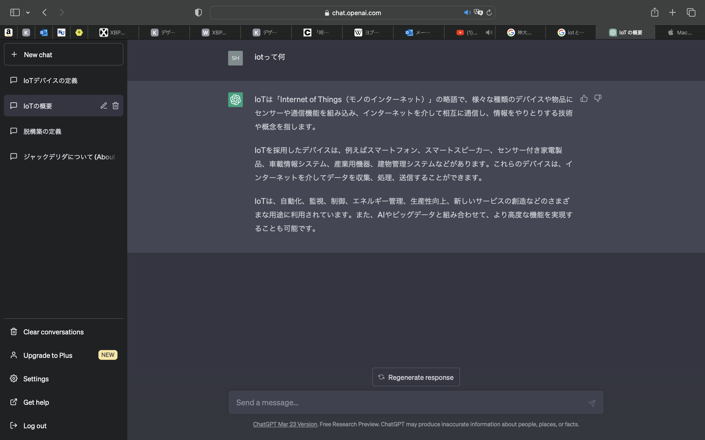
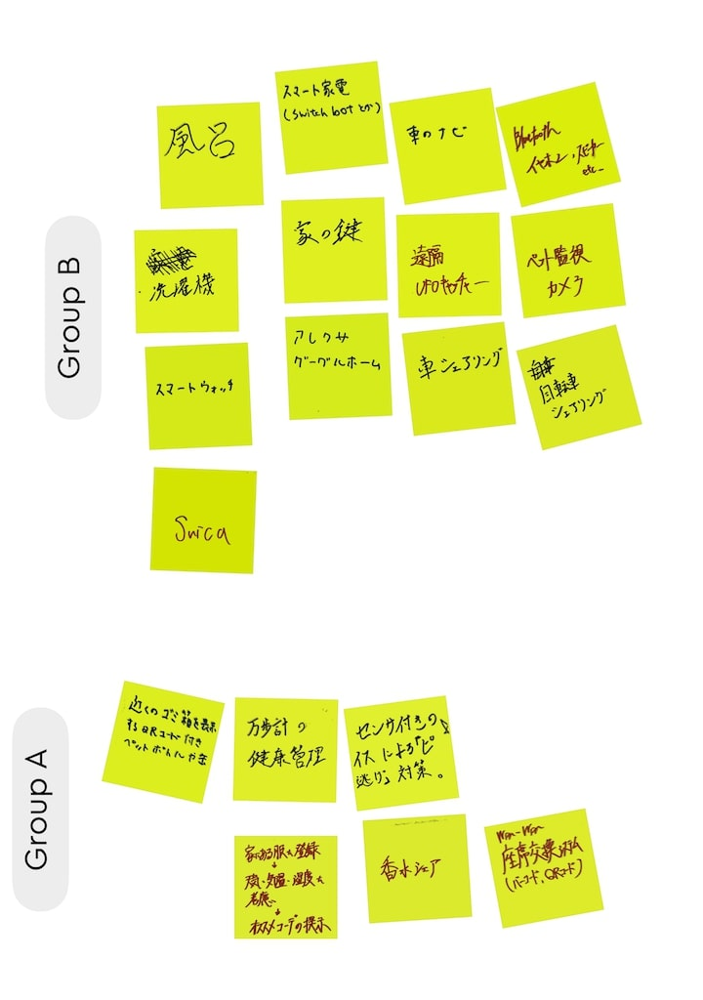
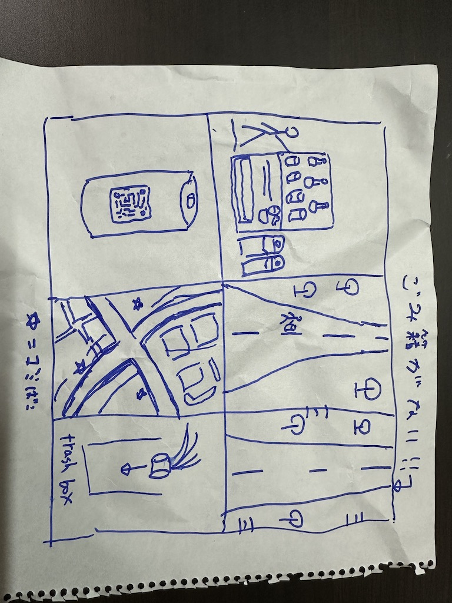

第一回
1 Iotとは何か
IotとはInternet of Things（モノのインターネット）の略で、従来インターネットに接続されていなかった様々なモノセンサー機器、住宅・建物、車、家電製品、電子機器など）が、
ネットワークを通じてサーバーやクラウドサービスに接続され、相互に情報交換をする仕組みのこと。
私の家もAmazonのアレクサとswitchbotのセンサーで電気とエアコンは声で動くようになった。
chatgptに聞いてみた

IoTで何ができそうか

IoTで何ができそうか？自分で考えたアイディア

いつも自販機のそばにはゴミ箱が置いてあるのだが、歩きながら飲むことが多いので無くなった時にはもうそこにゴミ箱がないことが多い。
なので缶やペットボトルに近くのゴミ箱がわかるQRコードを描き、それをスキャンすると最寄りのゴミ箱がわかるというものを考えた。
こうすることによって邪魔だったゴミがすぐに捨てられるようになるし、ポイ捨ても減らせるだろう。また、QRコードが読み取られた場所をデータとして蓄積し、そのデータを活用して
QRコードが多く読み取られた場所にゴミ箱を置くこともできる。あそこのゴミ箱に捨てられたらポイントゲットみたいな、ポケモンGO的なことも出来る。